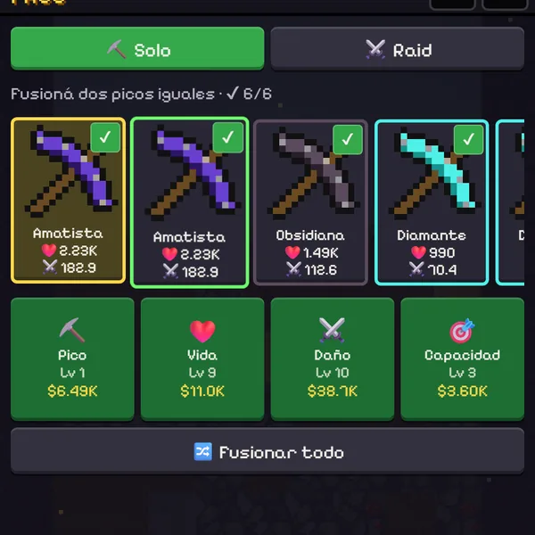
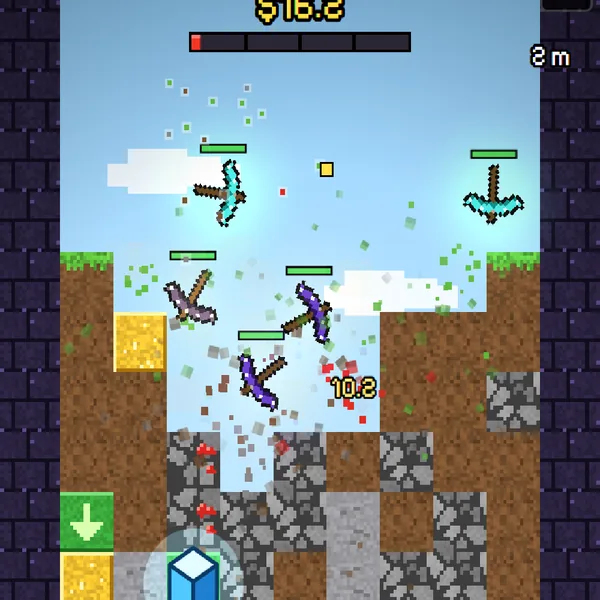
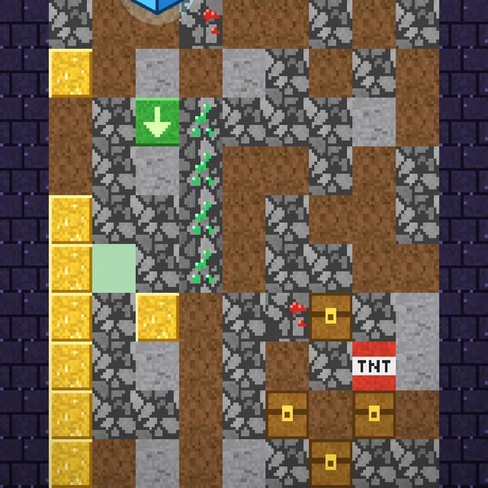
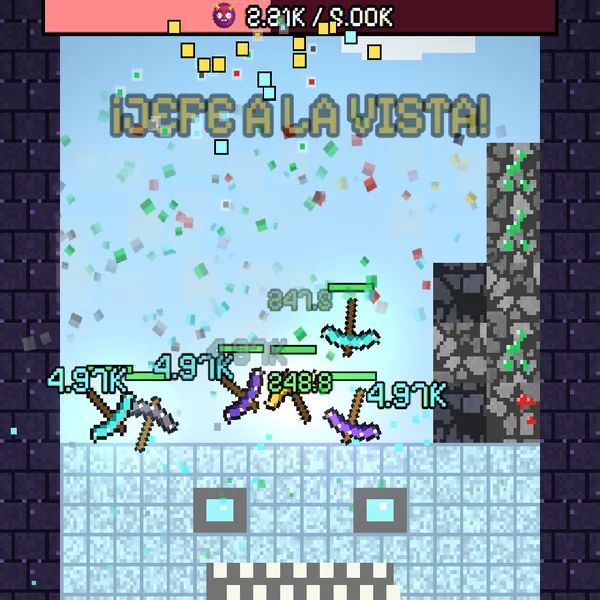
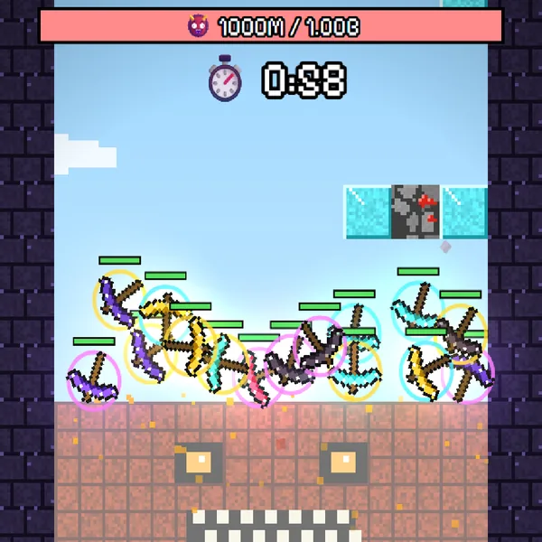

Solo
Tu mina, a tu ritmo. Cada partida suma plata, récords y avance hacia el próximo jefe. Los picos nunca se pierden.
Soltá picos. Rompé bloques. Bajá cada vez más hondo.
Comprá y fusioná picos, miralos caer y romper todo, vencé a un jefe cada 100 m y subí en el ranking de la semana. Gratis, en el navegador, en el celular o la compu.
Sin anuncios. Sin descargas. Sin cuentas.

Comprá picos y juntá dos del mismo nivel para subirlo. Mejorá vida, daño y cuántos soltás.

Los picos caen solos y rebotan contra los bloques. Mantené apretado para ir a x2.

Los minerales dan plata, la TNT vuela todo, la flecha verde empuja el pico hacia abajo y los cofres traen sorpresas.

Cada 100 m un jefe custodia el paso. Vencelo para arrancar desde ahí, y desde los 200 m reiniciá por Gemas.
Cierra en …. Los 10 mejores de cada tabla ganan cubos 🧊 para skins y auras.
Cargando…
Juntá dos del mismo nivel para conseguir el siguiente. Cada nivel pega más fuerte y aguanta más.
Tu mina, a tu ritmo. Cada partida suma plata, récords y avance hacia el próximo jefe. Los picos nunca se pierden.

De 2 a 4 jugadores comparten una mina y tienen 1 minuto para bajar a un jefe. Se entra con código, link o desde la lista pública. ¿Solo? Te acompaña un fantasma con tus picos.
Hay más modos en camino. Cuando haya uno para probar, va a aparecer acá primero.
Lo que probamos en la beta ya está en Pickfall para todos, con ranking y Raid como siempre.
La última beta ya está en el juego. Cuando estemos probando algo nuevo, desde acá vas a poder entrar a la versión de prueba. Guarda aparte, así que nunca toca tu progreso.
Sí. Sin anuncios ni compras con dinero. Todo se gana jugando.
No. Las skins y auras son cosméticas y el servidor recalcula cada récord del ranking.
En tu navegador, en tu dispositivo. No hay cuentas: si borrás los datos del sitio o cambiás de equipo, empezás de nuevo.
Sí, está pensado para pantallas verticales táctiles. En la compu se juega con el mouse.
Solo un ID anónimo, tu apodo y tus mejores partidas, para el ranking. Más detalle en la página de privacidad.
Pasando los 800 m no hay más jefes: el fondo no termina y todo paga el doble, hasta 3 minutos.
Jugar gratis